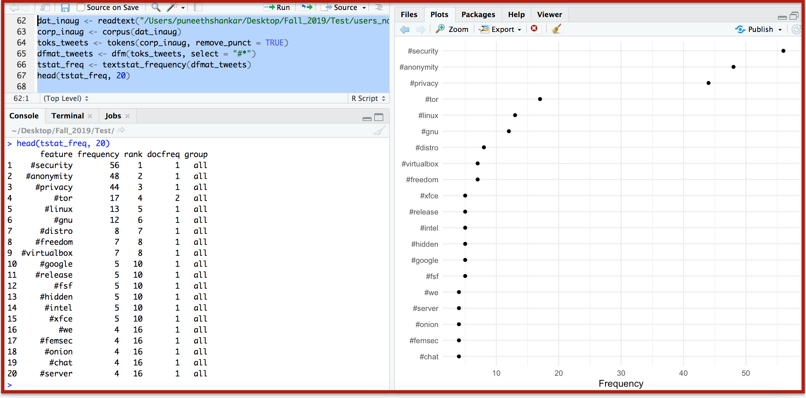

Analysing the sentiment of the users over The Wire discussion forum on the Galaxy3 social networking site on dark web:
Creating Corpus
'The Wire' discussion forum on the Galaxy3 onion site looks as below:

User comments on the 'The Wire' forum has been extracted by navigating through the Next button
Each user comment after scraping is saved in a independent text file with each comment in a separate paragraph

Corpus content with document level variables

Plot for number of tokens vs users
Stopwords in the quanteda package

Top Features in the Corpus
Measuring the frequency of certain keywords in corpus
Measuring the frequency of hashtags in corpus

Text Similarity among the users
Other most similar users
Support for Sentiment Analysis in Quanteda
Measuring the frequency of positive and negative words in Corpus
For a statement: Donald Trump is a great President
For a statement: Donald Trump is a bad President
Performing Targeted Sentiment Analysis - Example 1
Keywords - ('Security', 'Anonymity', 'Hack', 'People')
For Other users
Frequency Plot for all users
Sentiment Plot for all users
Performing Targeted Sentiment Analysis - Example 2
Keywords - ('Privacy', 'Tor', 'Anonymity', 'Linux')
For Other users
Frequency Plot for all users
Sentiment Plot for all users